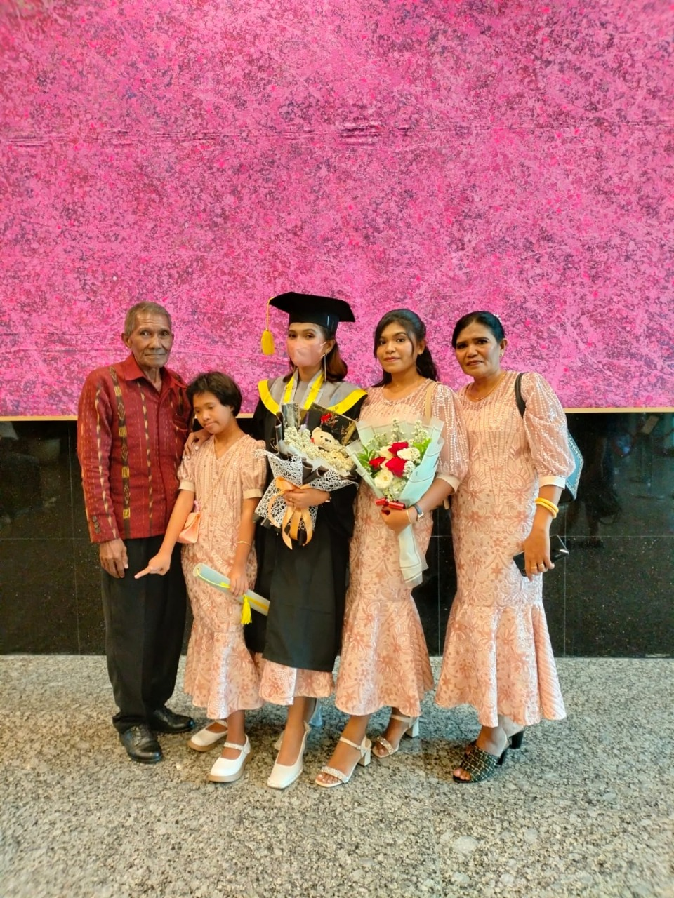

Perkenalkan, saya
Tia Riantoby.
Saya anak ke-2 dari 3 bersaudara. Hobi saya jalan-jalan, tapi gak tahu mau ke mana. Intinya jalan-jalan aja cari angin, xixi :)
Saya memiliki satu lagu kesukaan dengan judul "Who Says".
Silahkan klik link lagu di sini :)
Orang tua saya Puji Tuhan masih lengkap, jadi ketika libur saya bisa berkumpul bersama keluarga. Keluarga saya memang sederhana, tetapi dari kesederhanaan itu saya dibentuk menjadi anak yang menghormati orang tua, tidak penuntut, rajin berdoa, rajin beres-beres rumah, suka berbagi, dan selalu mengandalkan Tuhan dalam segala hal, hehe :) Dan dari kesederhanaan itu juga, keluarga saya hidup bahagia sampai sekarang.
| No | Nama | Status | Usia (2025) |
|---|---|---|---|
| 1 | Ae | Bapak | 68 Tahun |
| 2 | Be | Ibu | 55 Tahun |
| 3 | Ce | Anak Pertama | 24 Tahun |
| 4 | De | Anak Kedua | 21 Tahun |
| 5 | Ee | Anak Ketiga (Bungsu) | 16 Tahun |
Keluarga Mahasiswa Adonara Yogyakarta KMAY.
Keluarga Mahasiswa Adonara Yogyakarta atau biasa disebut dengan KMAY. Awalnya, organisasi ini bernama Keluarga Nusa Tadon Adonara (KNTA) sebelum kemudian berubah menjadi Keluarga Mahasiswa Adonara Yogyakarta (KMAY). KMAY didirikan pada tahun 1997 dan terus berkembang hingga saat ini, tahun 2025, serta akan terus berlanjut di masa yang akan datang.
KMAY adalah organisasi mahasiswa yang berasal dari Adonara, Flores Timur, dan sedang menempuh pendidikan di Yogyakarta. Organisasi ini berfungsi sebagai wadah untuk mempererat tali persaudaraan, berbagi pengalaman, serta mendukung anggotanya dalam berbagai aspek, baik akademik, sosial, maupun budaya.
Dalam menjalankan kegiatannya, KMAY memiliki struktur kepengurusan inti yang dipimpin oleh seorang ketua. Ketua ini dipilih melalui Musyawarah Anggota Tahunan (MANTA), yang diadakan setiap tahun menjelang berakhirnya periode kepengurusan. Melalui kepengurusan ini, KMAY rutin mengadakan berbagai kegiatan, seperti perayaan malam tahun baru, olahraga bersama, diskusi, serta acara budaya yang bertujuan memperkenalkan adat dan tradisi Adonara di Yogyakarta.
Sebagai sebuah organisasi, KMAY tidak hanya menjadi tempat berkumpul, tetapi juga menjadi ruang bagi mahasiswa Adonara untuk saling mendukung dan berkembang selama menempuh pendidikan di perantauan.